← Volver a Inicio
Tema 1: ¿Qué es la Filosofía?
Es una disciplina académica que reflexiona sobre la esencia, las causas y los efectos de la realidad, especialmente sobre el ser humano.
Nace en la antigua Grecia, cuando los pensadores comenzaron a buscar explicaciones racionales en lugar de mitológicas.
La filosofía busca comprender el porqué de las cosas, desarrollar el pensamiento crítico y analizar los fundamentos del conocimiento, la moral y la existencia.
Su objetivo principal es alcanzar la sabiduría, entendida como el conocimiento profundo y reflexivo de la vida y el universo.

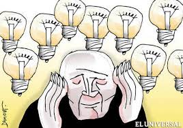
Tema 2: Creencias Mayas
Los mayas fueron una civilización profundamente espiritual. Creían en muchos dioses relacionados con la naturaleza,
el sol, la lluvia, la luna y el maíz, que consideraban sagrado. Su cosmovisión giraba en torno a ciclos eternos del universo.
Consideraban que el tiempo era cíclico, y que la vida y la muerte eran parte de un mismo proceso.
Practicaban rituales, ofrendas y observaciones astronómicas que vinculaban la vida humana con los movimientos de los astros.
Para los mayas, el equilibrio con la naturaleza y los dioses garantizaba la armonía del cosmos.
Tema 3: Disciplinas de la Filosofía
Las principales disciplinas son:
Metafísica (el ser y la existencia),
Epistemología (el conocimiento),
Ética (la moral),
Estética (la belleza y el arte),
Lógica (el pensamiento correcto),
y Filosofía política (la sociedad y la justicia).
Cada disciplina permite abordar los distintos aspectos de la realidad humana y natural.
Estas ramas se complementan para ofrecer una comprensión integral del mundo, la verdad y los valores que rigen la vida humana.
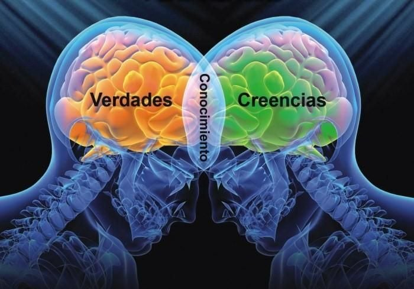
Tema 4: Filósofos y su Filosofía
- Sócrates: “Conócete a ti mismo”, promovió el diálogo y la reflexión ética. Enseñaba que la sabiduría comienza con reconocer la propia ignorancia.
- Platón: Defendió la existencia del mundo de las ideas, un mundo perfecto e inmutable que sirve de modelo al mundo físico.
- Aristóteles: Basó su pensamiento en la observación y la lógica. Consideraba que el conocimiento surge de la experiencia.
- Descartes: Padre de la filosofía moderna. Propuso la duda metódica como herramienta para alcanzar la verdad: “Pienso, luego existo”.
← Volver a Inicio
Tema 1: La Lógica
La lógica es la ciencia del pensamiento correcto. Estudia las formas válidas de razonamiento, los argumentos y su estructura.
Es una herramienta fundamental para la filosofía, la ciencia y la vida cotidiana, ya que permite analizar y evaluar afirmaciones con base en la razón y la coherencia.
Gracias a la lógica podemos distinguir los argumentos válidos de los inválidos y evitar errores en el pensamiento.
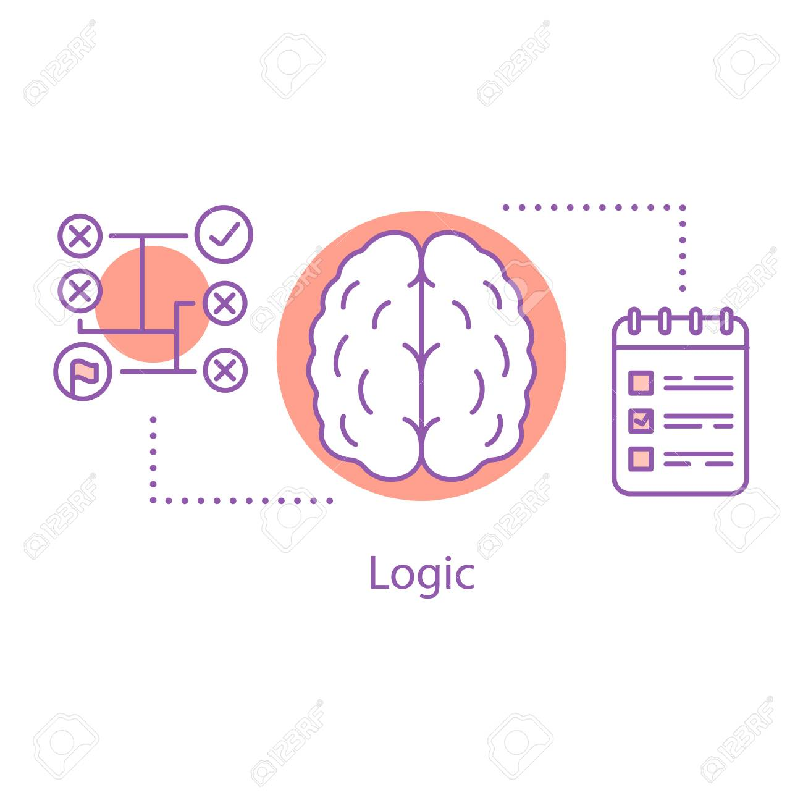
Tema 2: Principio de identidad y no contradicción
- Identidad: Todo objeto es igual a sí mismo (A es A).
- No contradicción: Nada puede ser y no ser al mismo tiempo bajo el mismo aspecto.
Estos principios son fundamentales para el razonamiento lógico, ya que garantizan la coherencia del pensamiento.
Sin ellos, no sería posible distinguir lo verdadero de lo falso, ni construir conocimientos sólidos y racionales.
Tema 3: Principio del tercero excluido
Entre dos proposiciones opuestas no hay término medio: una debe ser verdadera y la otra falsa.
Este principio asegura que toda afirmación tiene solo dos posibles valores: verdadero o falso.
Es la base de la lógica binaria, usada incluso en los sistemas informáticos modernos.
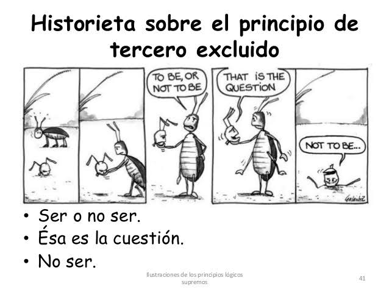
Tema 4: Razonamiento o argumentación
El razonamiento es el proceso mental mediante el cual obtenemos conclusiones a partir de premisas.
Es la base del pensamiento crítico y de la argumentación lógica.
En la filosofía, la argumentación se utiliza para defender ideas, refutar errores y construir teorías coherentes sobre la realidad.
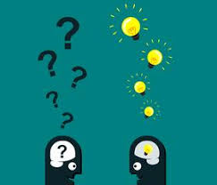

Tema 5: Silogismos
Un silogismo es un razonamiento compuesto por dos premisas y una conclusión.
Ejemplo: “Todos los hombres son mortales. Sócrates es hombre. Por tanto, Sócrates es mortal.”
Este tipo de razonamiento fue desarrollado por Aristóteles y constituye la base de la lógica clásica.
Permite deducir conclusiones universales a partir de verdades generales y particulares.
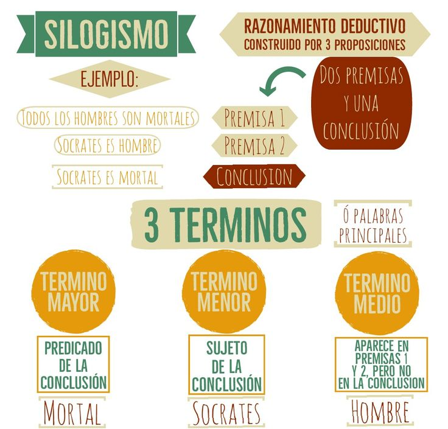
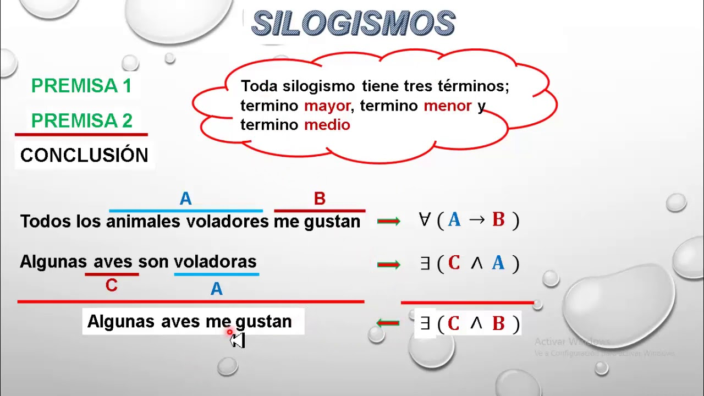
Tema 6: Razonamiento deductivo e inductivo
- Deductivo: Va de lo general a lo particular. Se basa en la aplicación de principios generales a casos específicos.
- Inductivo: Va de casos particulares a una conclusión general. Se usa en la ciencia para formular teorías a partir de observaciones.
Ambos razonamientos son esenciales en el pensamiento crítico y la construcción del conocimiento.
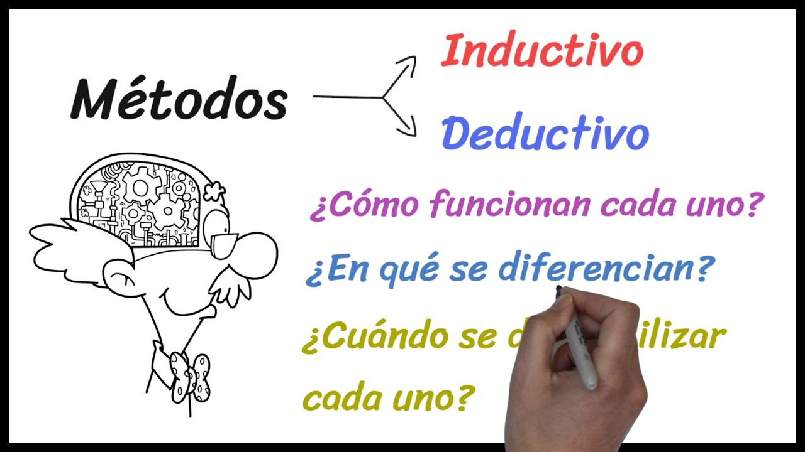
Tema 7: Tipos de falacias
Las falacias son errores en el razonamiento que parecen válidos, pero en realidad no lo son.
Pueden ser intencionales o accidentales y se usan con frecuencia para manipular opiniones.
Ejemplos: Ad hominem (atacar a la persona en lugar del argumento), apelación a la autoridad, falsa causa y apelación a la emoción.
Tema 8: Lenguaje y lógica proposicional
La lógica proposicional analiza proposiciones simples y compuestas, unidas por conectivos como “y”, “o”, “no”, “si... entonces”.
Es fundamental en el estudio del pensamiento formal, la matemática y la informática, donde las proposiciones se usan para establecer relaciones de verdad o falsedad.
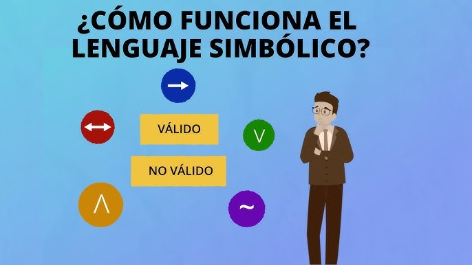
← Volver a Inicio
Tema 1: Conocimiento Científico
Es el saber obtenido mediante la observación, la experimentación y el razonamiento, siguiendo un método sistemático y verificable.
Se caracteriza por ser objetivo, comprobable y universal.
Permite generar teorías, leyes y modelos que explican fenómenos naturales y sociales, contribuyendo al desarrollo humano y tecnológico.
Tema 2: Método Científico
Es el conjunto de pasos ordenados que permiten desarrollar una investigación.
Incluye la observación de hechos, la formulación de hipótesis, la experimentación, el análisis de resultados y la conclusión.
Este proceso busca garantizar la validez de los conocimientos adquiridos.
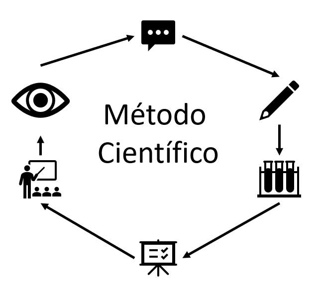
Tema 3: Ciencias Sociales
Estudian al ser humano en sociedad: su comportamiento, cultura, economía, política y relaciones.
Ejemplos: Sociología, Antropología, Economía, Psicología e Historia.
Las ciencias sociales buscan entender cómo los individuos interactúan en grupo y cómo las instituciones influyen en la vida colectiva.
Tema 4: Conocimiento Empírico
Surge de la experiencia directa, la observación y los sentidos.
Es subjetivo, depende de la percepción individual y no necesariamente se comprueba científicamente.
Es la base del conocimiento común, sobre el cual se apoya la ciencia para desarrollar explicaciones racionales y verificables.
Tema 5: Ciencias Naturales
Estudian la naturaleza y sus leyes mediante el método científico.
Analizan fenómenos físicos, químicos y biológicos para comprender el universo.
Ejemplos: física, química, biología, astronomía y geología.
Estas ciencias han permitido grandes avances en medicina, energía, ecología y tecnología.
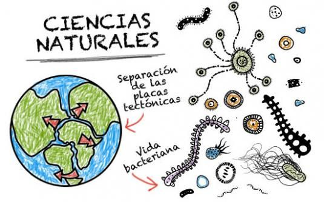
Tema 6: Efectos de la Ciencia Aplicada y el Desarrollo Tecnológico
La ciencia aplicada y la tecnología han transformado la vida humana, mejorando la salud, la comunicación y el transporte.
Sin embargo, también plantean desafíos éticos como la contaminación, la automatización laboral y la privacidad digital.
El uso responsable del conocimiento científico es esencial para un desarrollo sostenible y equilibrado.